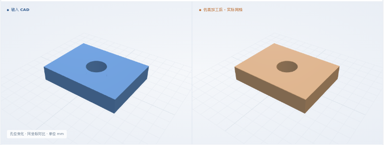
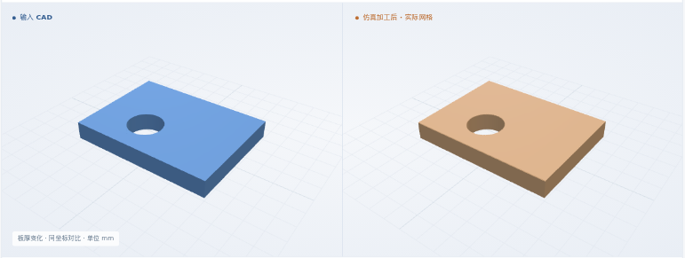

孔径变化
φ2.5 · 孔心 (3, 2) · 厚 1.5 mm
最终体积 IoU99.9744%

全部结果均为软件仿真，未做真实切削。真实工艺卡整卡通过 0 份。工艺卡和判据多为开发方编写，未经工艺师傅批准。开发进度 →
新增输入接入能力；复用已有通孔零件、通用 XYZ 和 6061-T6 标签。
本次起点是结构化草案。草案来自已有合成工艺卡的编写数据，附原 PDF 引用；没有运行模型自动转录。候选状态随执行方案保留，未标成“原文已核实”。
φ2.5 · 孔心 (3, 2) · 厚 1.5 mm
φ2 · 孔心 (4, 3) · 厚 1.5 mm

φ2 · 孔心 (3, 2) · 厚 1 mm

这三例均重新生成 NC 并实际去料；图像来自本次 CAD / 仿真网格。不是新增三种零件特征，也不代表真实工艺卡已通过。
仍可查看上方静态图及下载形状。
完整矩形毛坯 → 钻孔 → 提刀 → 几何检查
核对孔径、孔位、板厚、材料与引用；保留全部 6 个工步。只执行钻孔，其他工步保持未验证。
重读原生 CAD，检查形状与工艺意图一致，再生成钻孔 NC；核对单位、刀具、坐标、深度和进给。
使用完整原坯执行原 NC；与原 CAD 比较体积，再检查孔径、孔位和贯穿。采用已存档的软件条件。
纸卡全工序均保留；来料与装夹采用明确的软件前提。原文语义、制造公差、粗糙度、材料物理及真实夹具仍未验收。
三例各有原 PDF、草案、字段绑定、CAD 与显式资源。孔径软件范围为名义值 ±0.1 mm，孔心偏差 ≤0.1 mm，9 条轴向探测线检查贯穿；条件沿用此前已发布的 S1 存档，网格 0.025 mm。
完整输入 ZIP ↗ + 软件条件 ↗ · 全部数值 ↗23 项输入反例 + 1 项原生 CAD 反例；7 个旧用例准备回归
本页记录 v1 草案接口：遇到明确公差、未知硬约束或非钻孔工序会拦截。后续新增的公差及复合铣削能力在 S4 入口分别列出；真实模型自动转录、其他工艺草案接入和真实整卡仍待完成。